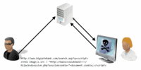
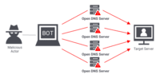
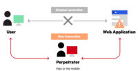

Task 3: HTML & CSS Table of Web Attacks
| Name | Web Attacks |
|---|---|
|
Cross-Site Scripting

Source: Veracode |
Cross-site scripting (XSS) attacks trick a browser into delivering malicious client-side scripts to the victim's browser, which will automatically execute it once received. This malware can:
|
Fuzzing

Source: beyondsecurity.com |
Fuzz testing is a type of web attack that works by initially inputting a large amount of random data (fuzz) into an application to get it to crash. The next step is using a fuzzer software tool to identify the weak spots. If there are any loopholes in the target's security, the attacker can further exploit it. Learn more about Fuzzing attacks |
|
SQL Injection Attacks
> 
Source: Spanning.com |
A SQL Injection attack involves inserting or “injecting” a SQL query via the input data from the client to the application. A successful attack allows an attacker to manipulate the SQL queries that an application makes to its database. Learn more about SQL Injection Attacks |
Drive-By Download

Source: Wallarm.com |
A drive-by download attack is a cyber threat technique that allows threat actors to install malicious programs onto devices without user-initiated downloads. Unlike many other cyberattacks that rely on human error for network access, drive-by download attacks exploit security vulnerabilities within an operating system so that user devices become infected by simply visiting a compromised website. Learn more about Drive-By Download attacks |
|
DDoS (Distributed Denial-of-Service)

Source: onelogin.com |
A distributed denial-of-service (DDoS) attack occurs when a group of systems flood a server with fraudulent traffic. Eventually, the server is overwhelmed, causing it to either go down, or become unresponsive, even to legitimate requests. Learn more about DDoS attacks |
Using Components with Known Vulnerabilities

Source: Wallarm.com |
Vulnerability or exploit hidden in a downstream dependency or left over from an Open-Source code repository could lead to compromise in the final site. Learn more about Using Components with Known Vulnerabilities attacks |
|
MiTM (Man-in-the-Middle)

Source: imperva.com |
A man in the middle (MITM) attack is a general term for when a perpetrator positions himself in a conversation between a user and an application—either to eavesdrop or to impersonate one of the parties, making it appear as if a normal exchange of information is underway. Learn more about MiTM (Man-in-the-Middle) attacks |
Directory Traversal

Source: Learn.snyk.io |
A directory traversal attack aims to access files and directories that are stored outside the intended folder. By manipulating files with "dot-dot-slash (../)" sequences and its variations, or by using absolute file paths, it may be possible to access arbitrary files and directories stored on the filesystem; including application source code, configuration, and other critical system files. Learn more about Directory Traversal attacks |
Password-Based Attacks

Source: secureb4.io |
A password attack is any attempt to exploit a vulnerability in user authorization within a digital system. And just as there are a near-infinite number of possible passwords, there are many different methods that a cybercriminal may employ to maliciously authenticate into a secure account. Learn more about Password-Based Attacks |
Broken Authentication

Source: Secinfos.com |
Broken authentication and session management attacks are a serious threat to the security of online systems. These types of attacks exploit vulnerabilities in the authentication and session management mechanisms used by web applications to identify and track users. When these mechanisms are not properly implemented or are mis-configured, attackers can gain unauthorized access to sensitive data and systems, such as user credentials, personal information, and financial data. Learn more about Broken Authentication |